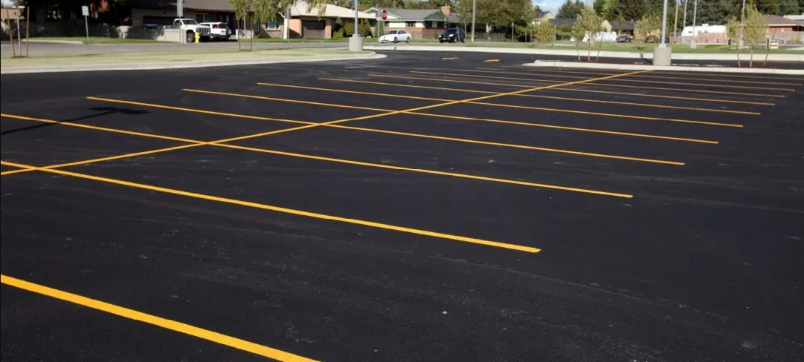
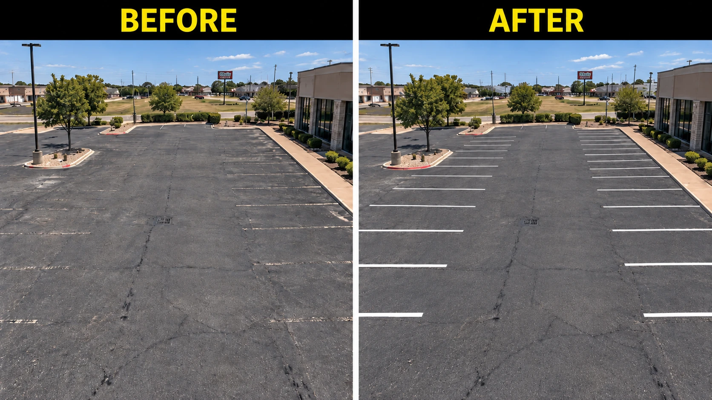
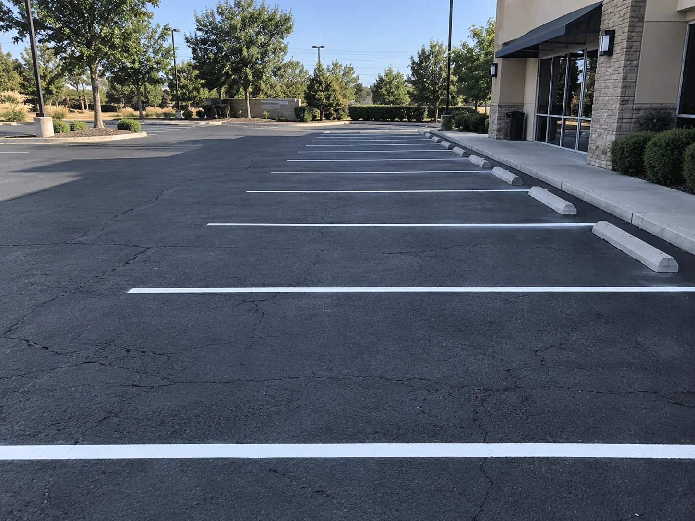
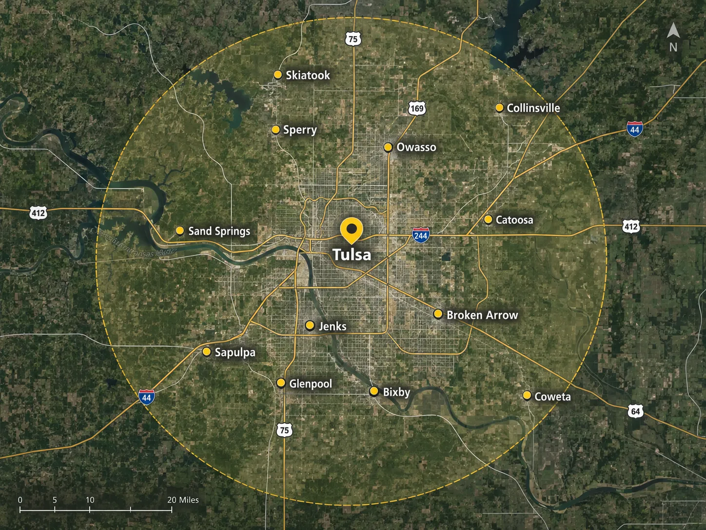

When the paint fades, nobody can tell where a stall starts or ends. Cars park crooked, accessible spaces disappear, fire lanes go unmarked, and customers notice before you ever do.
Left alone, it just keeps fading. A little more every season, until the lot looks abandoned instead of open for business. I'll remeasure the layout, restripe it clean, and make sure it still meets code.
Tulsa-based & locally owned · Fully insured · Free lot assessment
Every lot is a different shape with different traffic. Here's what's usually part of the job.
Full remeasure and layout on a new or repaved lot: straight lines, even spacing, and a plan that maximizes usable stalls from day one.
A clean repaint over your existing layout when the plan still works and the lines just need to look new again.
Accessible stall counts, dimensions, and van-accessible spacing done to code, plus the signage and post-mounted signs to match.
Red curb painting and "NO PARKING FIRE LANE" stenciling that keeps emergency access clear and your property up to code.

Once the lines disappear, so does the order in your lot. Accessible stalls that don't read as accessible anymore are an ADA compliance risk. Unmarked fire lanes can block emergency access, and that's on the property owner, not the fire department. Crooked, unclear parking wastes spaces you're already paying for.
A fresh, code-compliant layout does more than look better. It protects you.
A restripe should start with a tape measure, not a paint sprayer. I remeasure the lot, lay out string lines for straight, evenly spaced rows, and run an industrial striping machine for crisp, durable lines, not a quick pass over the old ones.
I plan the layout to maximize usable stalls and meet code, including ADA-compliant accessible spaces and signage and fire lane marking that holds up.

A few real jobs, on real lots, around the Tulsa area.
I've spent years working in service industries around Tulsa, and one thing stuck with me: great work isn't complicated. It's showing up on time, doing the job right the first time, and treating every property like it's your own.
I started Mr. Striper because I kept seeing lots where the striping was an afterthought, just a quick pass over the old, crooked lines instead of a layout that was actually remeasured. I bring that same straightforward, no-shortcuts approach to every lot I stripe, and I don't pack up the truck until every line is straight and every stall meets code.
Will Senka, Owner / Parking Lot Striping Specialist
Skiatook, Collinsville, Owasso, Sperry, Broken Arrow, Bixby, Glenpool, Sand Springs, Catoosa, Jenks, Coweta, and Sapulpa.
If your lot is anywhere in the Tulsa area and the lines are due for a refresh, I'm happy to take a look.

Book a free lot assessment and I'll give you a straightforward quote before any work starts. No pressure, no obligation, just a straight answer on what your lot needs.